2015/1/10 新年プチオフ
「新年会でもしますか」ってことで南大阪に４台が集まった＾＾
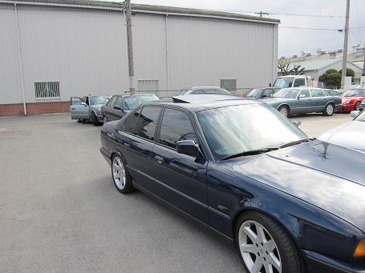 集まった本当の目的は・・・ とい号のメンテの打ち合わせ！ しかし！主役が大遅刻（笑
|
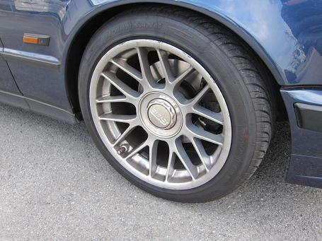 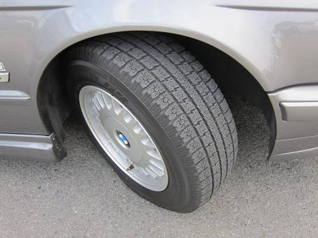 写真はBBSホイールに履き替えたボーベン号！ こっちは１５インチスタッドレスに履き替えたTINA号！ １５インチホイールも良く見ると凝った造りになっている。 |
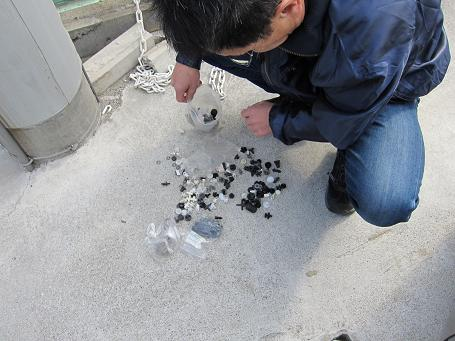 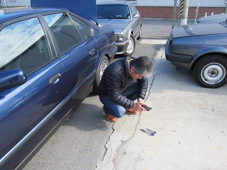 エアコンパネルの板バネを探すTINAさんと、HPネタの為に写真を撮るボーベンさん＾＾ 関西のE34乗りはいつでもどこでもこんな感じなんだなぁ（笑
|
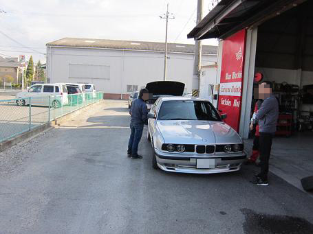 と、そこへ主役が登場！ 旧い外車は頼りになる主治医がいてこそ楽しめるのだ。
|
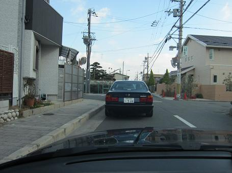 打ち合わせが済んだら時刻はお昼時！ TINAさんオススメのお店へ移動＾＾ 前は追突注意のボーベン号（笑
|
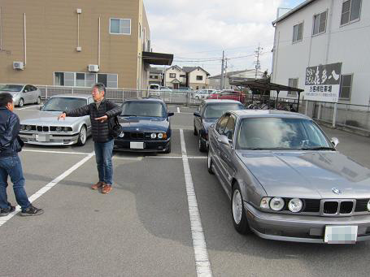 お昼が済んで、その後は駐車場でウダウダ＾＾ あ！今日は珍しく全部ナローグリルですね！ ってことで・・・
|
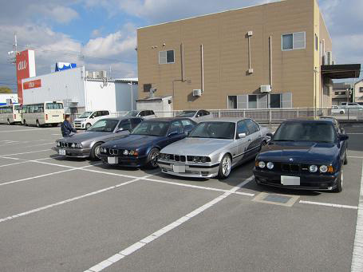 綺麗に整列！ その中でもメッキグリルとブラックグリルに分かれた！
|
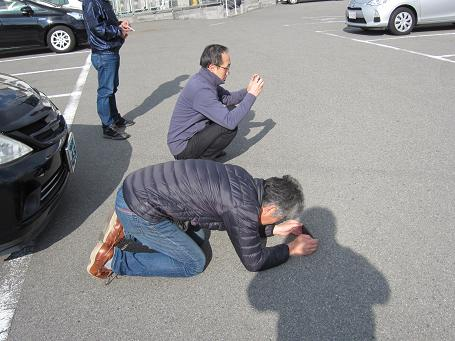 ボーベンさん！何を撮ろうとしてるんですか？！（笑
|
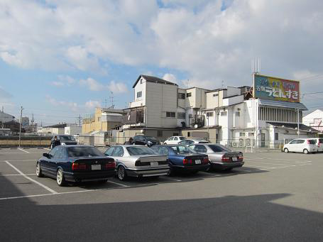 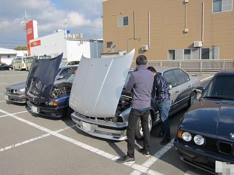 その後もしばらくウダウダ・・・＾＾ さて、今年も頑張って維持していきましょうm(__)m |